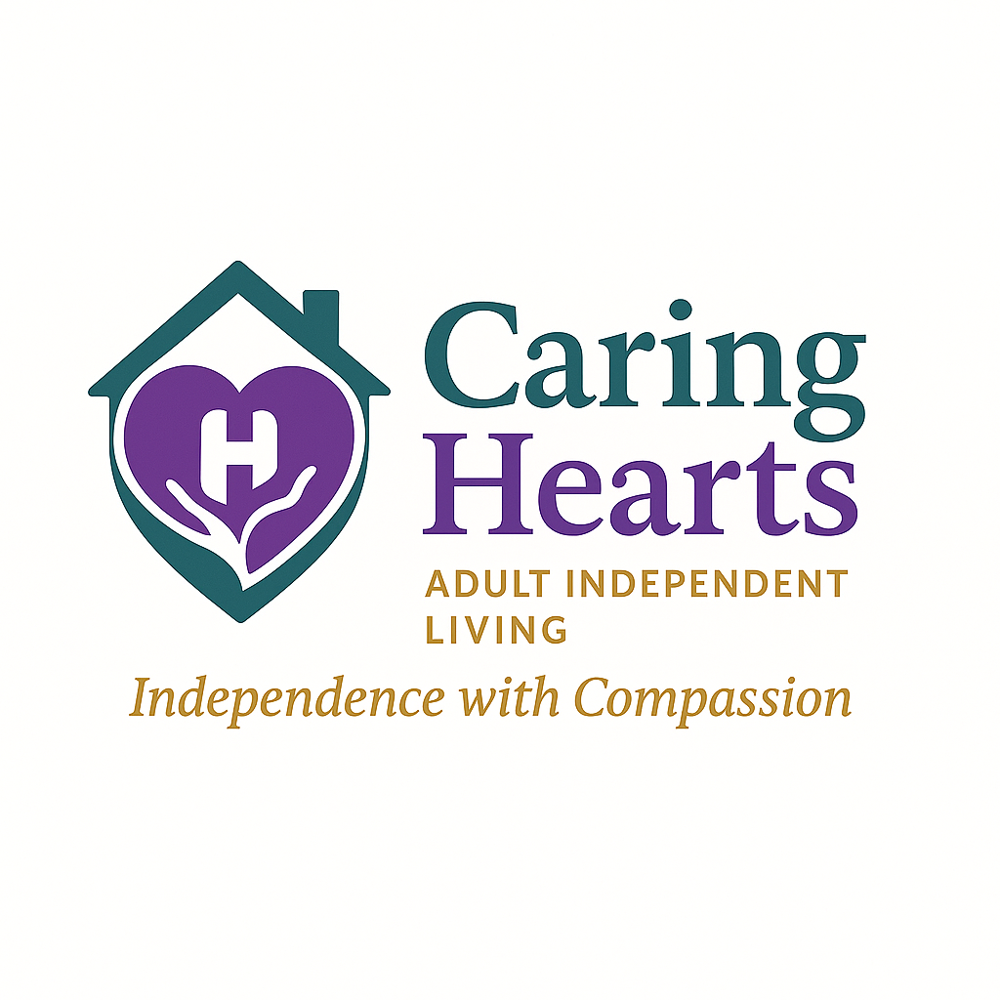

Structured daily support
Consistent routines designed to support stability and independence.

Adult independent living support focused on stability, structured routines, and accountable coordination.
Clear scope. Professional tone. Partner-ready language.
Consistent routines designed to support stability and independence.
Clear points of contact and predictable next steps across stakeholders.
Support focused on reducing crisis-driven re-placement and instability.
Do not upload clinical records, diagnoses, imaging, labs, or progress notes. Hospitals transmit PHI separately via approved channels.
Use the intake form to support faster review and consistent follow-up.